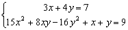

聯立二元一為一次及一為二次方程(II)
程式編寫日期: 2010年7月16日
這兩個程式可解聯立二元一次及二次方程，亦可以解聯立二元一次方程。另外若果輸入係數為整數/分數及最後答案為有理數時，答案會以分數形式表示，建議將計數機預先設定為假分數形式表示(按六次 Mode，再按 1 2 )。這個版本程式沒有第(I)版程式的輸入限制(亦即是輸入的第二個係數可以是0)。
第一個程式 (沒有記存答案，210 bytes)
?→D: ?→B: ?→C: ?→M: ?→Y:?→X: ?→A:
B => Goto 0: C┘D→D: ?→B: ?→C:
D2M+AD-C→M: - B-DY→Y: D◢ X=0 => M┘Y◢
2X => (√(Y2 - 4MX) + Y)┘Ans◢
Y┘X - Ans→Y: D◢ Y◢
Lbl 0: D┘B→D: C┘B→C: XD2 - DYM+: ?→B:
BD - CY + 2CDX - A→Y: ?→A: XC2 + BC - A→X:
2M => (√(Y2 - 4MX) + Y)┘Ans→A◢
M=0 => X┘Y→A◢ C-DA◢ Y┘M - A◢ C-DAns
第二個程式 (有記存答案，224 bytes)
?→D: ?→B: ?→C: ?→M: ?→Y:?→X: ?→A:
B => Goto 0: C┘D→D: ?→B: ?→C:
D2M+AD-C→M: - B-DY→Y: D→A◢
2X => (√(Y2 - 4MX) + Y)┘Ans→B◢
X=0 => M┘Y→B◢ Y┘X - B→Y: D→X◢ Y◢
Lbl 0: D┘B→D: C┘B→C: XD2 - DYM+: ?→B:
BD - CY + 2CDX - A→Y: ?→A: XC2 + BC - A→X:
2M => (√(Y2 - 4MX) + Y)┘Ans→A◢
M=0 => X┘Y→A◢ C-DA→B◢ Y┘M - A→X◢ C-DAns→Y
例題1: 解聯立方程:

按 Prog 1 再按 3 EXE 5 EXE 8 EXE 3 EXE 4 EXE 5 EXE 3 EXE 5 EXE 20
EXE (顯示1) EXE (顯示1，即第一組的解答為 x=1, y=1)
EXE (顯示1/3) EXE (顯示7/5，即第一組的解答為 x=1/3, y=7/5)
程式二執行完成後，按 RCL A 及 RCL B分別顯示第一組解答案的x及y的值，按 RCL X 及 RCL Y分別顯示第二組解答案的x及y的值。
例題2: 解以下聯立二元一次方程

按 Prog 1 再按 1 EXE 1 EXE 7 EXE 0 EXE 0 EXE 0 EXE
1 EXE -1 EXE 1 EXE (顯示4) EXE (顯示3)
因此解答為 x = 4 及 y = 3.
程式二執行完成後，按 RCL A 及 RCL B分別顯示方程組解答案x及y的值。
例題3: 試求直線 x - 2 = 0與圓形x2 + y2 + 3x + 7y + 2 = 0的交點。
先將兩個方程整理為 x = 2 及 x2 + y2 + 3x + 7y = - 2
按 Prog 1 再按 1 EXE 0 EXE 2 EXE 1 EXE 0 EXE 1 EXE 3 EXE 7 EXE - 2
EXE (顯示2) EXE (顯示 - 3，即第一組的解答為 x=2, y= - 3)
EXE (顯示2) EXE (顯示 - 4，即第一組的解答為 x=2, y= - 4)
所以兩個交點分別為(2, - 3)及(2, - 4)
程式二執行完成後，按 RCL A 及 RCL B分別顯示第一組解答案的x及y的值，按 RCL X 及 RCL Y分別顯示第二組解答案的x及y的值。
註1: 舊版程式(版本 I )第二個輸入係數不可以是0，否則會出現Math ERROR，新版兩個程式(版本II)沒有這方面的限制(例題3)。
註2: 若果兩組的解相同，表示曲線與直線相切。
註3: 若顯示顯示第一組解後，在顯示第二組解時出現Math ERROR。表示方程組只有一組解答，而且曲線與直線不是相切的關係。
註4: 現時不少同類程式，會無法計算下列方程的情況(出現 Math error)，這個程式沒有這方面的問題，其實這類程式必定可以同時計算聯立二元一次方程的問題，若果那個程式不能同時計算聯立二元一次方程，那麼很可能是設計欠嚴謹的程式，會得出錯 誤答案(誤以為無解)。

按 Prog 1 再按 3 EXE 4 EXE 7 EXE 15 EXE 8 EXE - 16 EXE
1 EXE 1 EXE 9 EXE (顯示1) EXE (顯示1)
因此解答為 x = 1 及 y = 1.